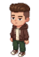
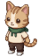

聊療貓 Bar · 選擇困難症小幫手
今天的選擇，先交給 AI 貓店長想想看
載入天氣中
--:--
--°C ·台中大里 --
今天的選擇困難，
想交給哪一個「自己」來處理？
先選一個角色和暱稱，等等進去後，AI 貓店長會陪你慢慢翻菜單。

男孩
認真工作也要認真休息才可以！
女生
今天有點累 · 想被好好照顧

貓咪
我打全部都交給命運來安排！
想讓貓店長怎麼叫你？（可留白）
選好了，帶我去找「今天那一份」吧！
先選角色再按開始。沒填暱稱就叫「今天的客人」囉！
系統
AI 貓店長給你的「今天那一份」
小提醒：
如果覺得我們的服務還不錯，也歡迎在 IG / Threads 標記我們，我們會不定時舉辦抽獎小活動！
查看社群帳號
咖啡廳 IG：@ttkcafebar
咖啡廳 Threads：@ttkcafebar
共學空間 IG：@talktokitties.bar
共學空間 Threads：@talktokitties.bar
我就要這份，拿去櫃台
想重來一輪
結束
AI 貓店長正在努力翻閱菜單，幫你找今天最適合的小夥伴推薦組合中…